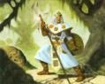

Joué par :
guix Joué par :
[ Information masquée ] Age : 30
Lieu de naisance : Stormwind
Signe de naissance : Ours
Sexe : Homme
Race : Humain
Faction : Alliance
Formation : Paladin
Niveau : 50
Guilde : Cercle du Preux (le) Artisanat 1 : Forgeron
Artisanat 2 : Mineur
Informations hrp : Paladin à la recherche du Graal en coopération avec Mauldred.
Description : Je ne crois pas quil est nécessaire de parler de mon passé lointain. Je vais plutôt commencer au jour où jai appris la mort de mon bien aimé père car cest à ce moment là que tout a commencé
Je vais tout dabord me présenter afin que vous puissiez imaginer de qui on parle dans ces différents récits. Je suis haut dun mètre soixante-dix, mes cheveux longs sont grisâtres et je porte une petite barbe de la taille dun « boc ». Mes yeux sont bruns foncés et je suis dune corpulence moyenne.
Généralement, je ne quitte jamais mon armure et mes armes. Sauf lorsque je rentre en ville où le port darme me gêne ainsi que cette grosse armure qui me ralentit. Je me revêtis donc dhabits de ville
Ère du Conflit [2]
Lune de la Force [1]
Décade du Panda
Décade du Gorille
Décade de l'Ours [1]
La voix du Paladisme
Deux coups résonnèrent dans la petite pièce qui me servait de chambre et deux hommes entrèrent. Lun était vêtu dune longue toge blanche et lautre portait une armure de garde. Lhomme à la toge blanche prît la parole : « Alathorn, votre père est décédé, je suis désolé de devoir vous annoncer une si triste nouvelle. »
- Comment est-ce arrivé ?
- Un mort vivant
- Encore ? Que me veulent ils ? Je croyais que nous étions en trêve
- Oui, la Horde nattaque plus lAlliance en masse, mais ils sen prennent à plusieurs personnes et vous faites parti des cibles, nous ne savons pas pourquoi.
A ce moment là, le garde prit la parole. « Alathorn, nous pensons quil est nécessaire de vous emmener à labris, suivez-nous jusquà lAbbaye au Northshire et nous vous formerons. »
- Bien, jaccepte. Mais apprenez moi à me débarrasser de ces horribles créatures Je vengerai mon père !
- Cest pour cela que nous sommes venus. Nous allons y travailler dit le maître des Paladins en toge blanche.
Lune d'Agilité [1]
Décade du Tigre
Décade du Singe
Décade du Faucon [1]
Un long voyage...
En arrivant à lAbbaye, le garde ainsi que dautres de ses compagnons me chargèrent de plusieurs missions, je devais à laide dun équipement médiocre, abattre plusieurs créatures ainsi que faire une percée dans la confrérie des Défias. Lorsque je me sentis prêt à entamer mon long voyage, on menvoya au Goldshire afin de faire mes dernières preuves avant de revoir Stormwind. Jétais pressé de revoir ma citée natale et je mempressa dobéir aux ordres et put enfin me diriger là où je voulais.
Javais, durant ces dernières semaines, appris plusieurs sorts destinés à me protéger, me soigner, et combattre plus férocement. Je devais donc maintenant apprendre à me forger des armes ainsi quun équipement afin de pouvoir plus tard, venger la mort de mon père tenant une épée fabriquée par moi-même. Cest pour cela que je dus voyager vers Ironforge, citée construite par les nains au fond de la terre. Cette magnifique citadelle était ornée de rochers brillants qui éclairaient au mieux la ville. La grande forge constituait le centre cest ici que je trouvai mon maître de profession. Le métier de forgeron étant très dur, je décidai de le laisser de côté jusquà devenir meilleur combattant. Je décidai de reprendre lart de la Forge lorsque je serai capable de tuer les plus dangereux morts vivants dAzeroth.
Cest en marche de lOuest, pays riche en diverses moissons malheureusement indexée par les Défias et rempli de succulents sangliers que jai rencontré mes compagnons de guilde actuelle : Agravedh et Myhm. Agravedh est le chef du Cercle, guerrier robuste fort et très puissant au corps à corps. Il a les cheveux beiges courts et des yeux dun brun perçant. Quant à Myhm, un prêtre indifférent, il possède la sagesse de lEglise, un très bon ami à connaître. Jai également rencontré plus tard grâce à ma guilde, le maître mage Allegius. Cet homme me ressemble beaucoup à lexception de la couleur de ses cheveux et de sa barbe. Cest un très grand mage puissant, il court après laventure, les objets épiques ainsi que lor ! Allegius possède la sagesse divine de la magie du Feu ! Jai également rencontré Iratus et Lianrhyn, deux compagnons qui ont rejoints notre guilde après diverses aventures passées ensemble. Iratus est un très bon prêtre et Lianrhyn un excellent chasseur.
Cest aussi en marche de lOuest que jai fait mes premières expériences en groupe. En effet, après un appel à laide de la garnison du ruisseau de lOuest, jai été dirigé vers colline des sentinelles où jai été choisi parmi les combattants se dirigeant aux Mortemines afin de régler le compte au chef des Défias.
Après avoir visité ces différents endroits, on menvoya dans plusieurs régions afin daider au mieux à faire régner lOrdre, parmi ceux-ci je cite : Les Carmines, les Bois de la Pénombre, Désolace, la Vallée de Strongleronce etc.
Lune de l'Esprit
Décade de la Chouette
Décade de la Baleine
Décade du Lapin
Troisième Ère [3]
Lune de la Force [2]
Décade du Panda [1]
Le Graal
Durant ce long voyage en quête daventures, jai rencontré un vieil ami de mon père. Ce vieux prêtre me reconnut sans peines. « Tu es Alathorn jeune Paladin ? » me dit-il avec ferveur.
- Oui, répondis-je. Comment le savez-vous ?
- Tes cheveux, ta barbe, on dirait ton père lorsquil avait ton âge
- Mon père est décédé, peut-être le savez-vous pas ?
- Bien sûr que je suis au courant Cest encore un mort vivant qui lui a hotté la vie
- Oui, je me bats pour le retrouver et lui trancher la gorge à laide de mon épée !
- Tu ny arriveras pas seul Alathorn
Après avoir entendu ces dernières paroles, je me mis à courir ignorant le prêtre. Comment peut-on douter dun fils vengeur ? Justement, la question ne se pose pas, la haine, la colère, beaucoup de facteurs déstabilisants lorsque je serai en face de mon adversaire même si ceux-ci peuvent maider à combattre avec une force décuplée Je neus à peine le temps de lever les yeux après avoir commencé ma course que le prêtre se retrouvait à nouveau devant moi. « Ecoute moi bien Alathorn, tu peux te débarrasser des morts vivants mais pas seul » dit lancien ami de mon père. »
- Ca, je le sais, vous venez de me le dire.
- Ecoute-moi une bonne fois pour toute ! Tu dois trouver le Graal
- Le Graal ? Quest-ce donc ?
Il hésita et baissa les yeux puis enfin me dit : « Ceci est un secret gardé depuis de longues années par des prêtres ayant combattu la Légion Ardente et il a été transmis de père en fils jusquà être interrompu. Le Graal est un objet dont personne ne connaît encore la forme mais cet objet contient une force sacrée utilisée tout aussi bien pour le bien que pour le mal. La Légion Ardente a utilisée cette énergie et en a abusé, le pouvoir du Graal sest retourné contre elle et lAlliance a gagné cette bataille, sans ça, nous serions tous des Orcs transformés par lingénierie des gnomes Du moins, cest ce que nous croyons. Cela faisait des années que ton père, mon vieil ami faisant parti des prêtres gardant le secret recherche ce Graal. Le soir de sa mort, il devait ten parler.
Alathorn, retrouve le Graal et utilise son énergie pour faire la guerre aux morts vivants. Pense à ton père, et venge tous les fils tués par ces affreuses créatures ! »
- Bien, je ferai de mon mieux
- Que la lumière te garde Alathorn, sois vigilent
A ce moment-là, une flèche vint se planter droit dans le cur du prêtre. Je regardai en direction de la flèche et vit un espion Troll, furieux, je le pourchassai puis lattaquai en lui plantant mon épée dans le dos. Le Troll tomba à terre. Il prononça des paroles incompréhensibles puis mourra « Cela ne mavance pas beaucoup » me dis-je Je dois trouver le Graal, utiliser son énergie, et tuer des morts vivants Pourquoi moi ? Moi qui ne demandais rien à personne, moi qui voulait étudier dans les plus grandes écoles gnomes Ceci sera repoussé. Je vaincrai !
Décade du Gorille [1]
La rencontre avec le Paladin Mauldred
Curieux den savoir plus sur le Graal, je parti enquêter à la bibliothèque de Stormwind. Dans un coin, se tenait Mauldred. Cet homme est un paladin mystérieux, il portait une capuche noire et lisait un livre parlant de la croisade écarlate. Puis il prononça une parole : « Alathorn, le Graal nest pas loin. »
- Sir ? Vous allez bien ? Comment connaissez vous mon nom ? Répondis-je fâché
- Le prêtre Hellurus ma parlé de vous
- Le prêtre Hellurus a été tué devant mes yeux il y a à peine deux heures
- Cet homme devait me parler du Graal, je recherche cet objet depuis de longues années, il ma dit que vous pourriez être un compagnon utile. Faisons équipe, nous rechercherons ainsi cet objet et pourrons le garder pour le protéger.
Jhésitai quelques instants, faire équipe afin de protéger le Graal était pour moi une chose très dangereuse. Mais après réflexion, jacceptai. Depuis ce jour-là, moi ainsi que Mauldred somme devenus de très bon ami se fixant le même but. Même si pour moi, mon but ne présente pas tout à fait les mêmes similitudes. Pourtant, Trouver le Graal, est un objectif commun.
Décade de l'Ours
Lune d'Agilité [1]
Décade du Tigre
Décade du Singe [1]
Ishara
Quelques mois ont passés et nous étions toujours à la recherche du Graal. Jétais désespéré de navoir aucuns signes concernant cet objet auquel mon père attachait tant dimportance. Un soir, alors que je ny croyais plus, je décidai de prier et magenouillai en pleine ruelle de Stormwind demandant à mon défunt père de me donner un indice. Quelques minutes plus tard, une femme âgée de pas plus de 16 ans tenant un objet dune étrange taille dans un drap blanc passa devant moi à toute vitesse accompagnée dune elfe. Je les suivis discrètement alors quelles étaient à la recherche dun médecin. Est-ce une épreuve que mon père menvoie ? Dois-je les suivre et leur apporter mon aide ? Mon devoir de paladin mordonnait de les aider mais quelque chose me disait que je devais attendre. Etait-ce lobjet que la jeune femme essayait de cacher ? Aurait-il un lien avec la fuite de ces deux personnes ? De plus, je navais que rarement vu une elfe fuir. Je me devais den apprendre plus. A partir de cet instant, jenquêtai donc sur cette jeune femme. Je me rendis quelques jours plus tard à Feralas afin de consulter un Druide Elfe qui pourrait men dire plus sur cette personne. Sur mon chemin, je marrêtai dans une auberge afin de passer la nuit où jeus la chance dentendre un conteur parler de la Légende de lEpée dIshara. Je me dis que lelfe pourrait avoir un rapport avec ceci et mempressai de rejoindre Feralas. Après avoir décrit cette personne en fuite ainsi que son amie Elfe au druide, il se dirigea vers sa bibliothèque et sorti un livre poussiéreux. Il me le tendit et je pus lire : La Légende de lEpée dIshara. « Je vous loffre » me dit-il avec un petit sourire. « Cette jeune femme comme vous dites est un être mi-elfe, mi-humaine. Lisez ce livre et vous comprendrez peut-être »
- Jen ai entendu parlé dans une auberge dans laquelle javais décidé de faire escale. Mais pourriez vous men dire plus sur cette arme ?
- Nul ne le peut, seul ces écrits ont été trouvé pour linstant la concernant.
- Bien Je vais men informer et en parler avec mon ami. Merci maître Druide, Au revoir, je reviendrai vous voir !
- Au revoir mon jeune ami, soyez prudent...
Après avoir lu le livre, je compris que lépée pourrait avoir un lien avec le Graal. Mais aucunes preuves ne pouvaient lattester. Je commençai donc une longue quête : La quête de lEpée dIshara.